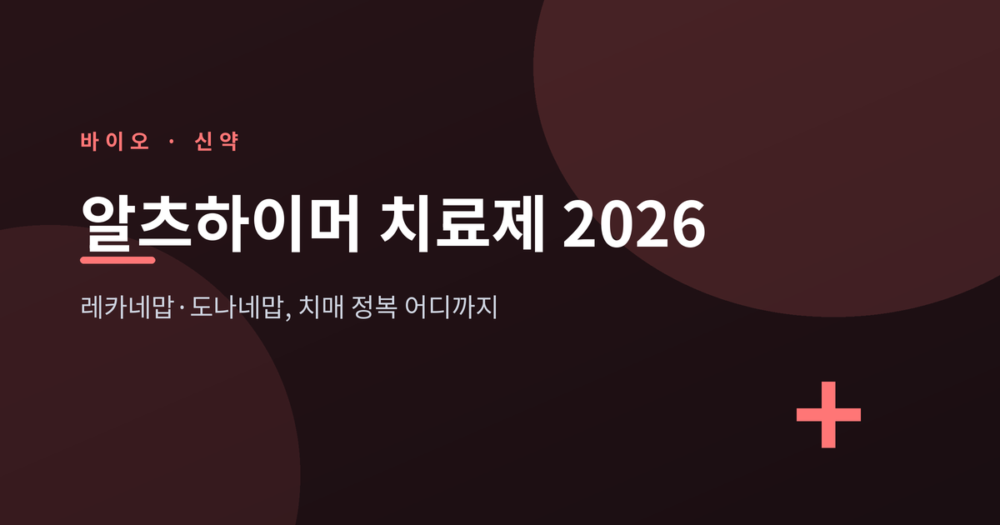
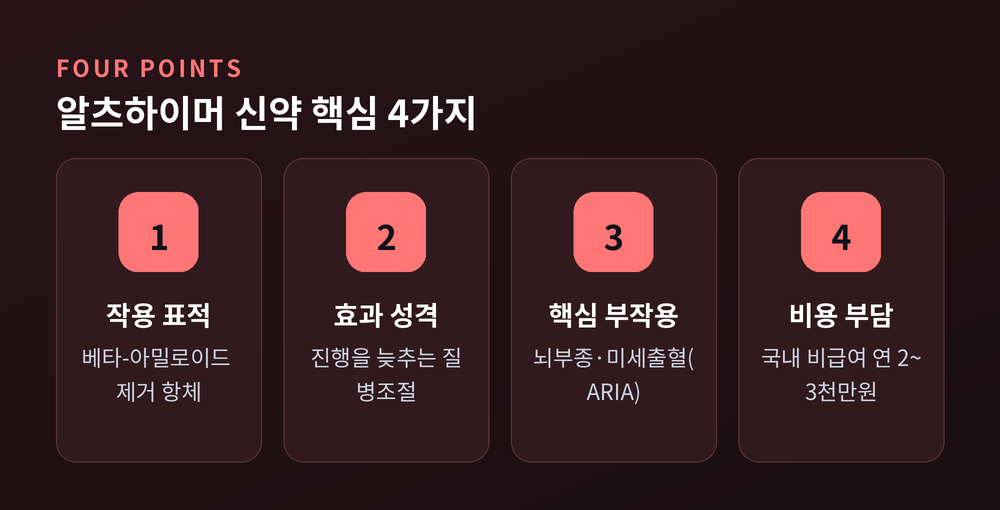
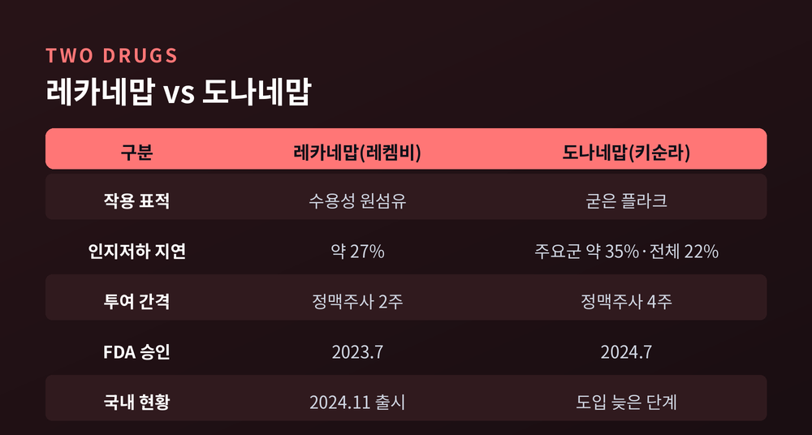
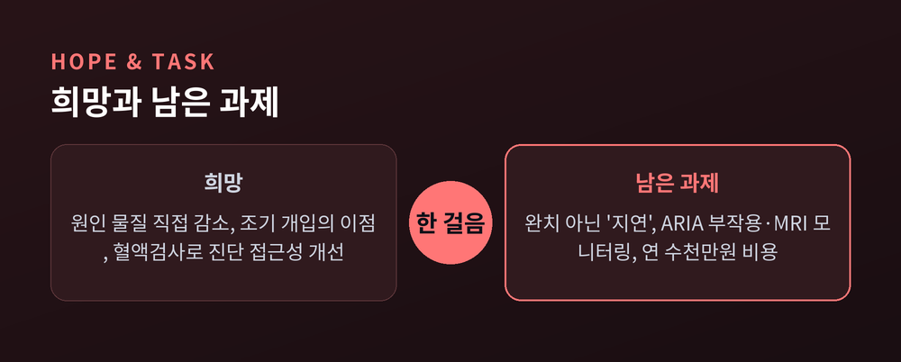

레카네맙·도나네맙, 치매 정복 어디까지 왔나

이번 글에서는 2026년 현재의 알츠하이머 치료제를 정리해 보겠습니다.
핵심부터 먼저 말씀드립니다. 레카네맙(레켐비)과 도나네맙(키순라)은 병의 진행을 '늦추는' 약이지, 잃은 기억을 되돌리는 약은 아닙니다.
무엇이 달라졌고 무엇이 아직 숙제로 남았는지, 수치와 한계를 함께 짚어보겠습니다.
이 글은 일반 정보 제공을 위한 것이며, 진단·처방을 대체하지 않습니다. 약물 사용 결정은 반드시 전문의 진료를 통해 이뤄져야 합니다.

먼저 큰 그림입니다.
두 약은 모두 뇌 속에 쌓인 베타-아밀로이드라는 단백질을 표적으로 삼습니다.
알츠하이머병의 대표 병리로 아밀로이드 침착과 타우 단백질의 엉킴이 꼽혀 왔고, 이 신약들은 그중 아밀로이드를 겨냥합니다.
예전에는 손쓸 방법이 사실상 증상 완화제뿐이었습니다.
지금은 원인 물질을 직접 줄이는 항아밀로이드 항체 치료제가 임상에 자리를 잡았습니다.
다만 이 약들이 하는 일은 진행 속도를 늦추는 것입니다.
기억을 회복시키거나 병을 멈춰 세우는 단계는 아직 아닙니다.
참고로 이 글은 일반 정보를 정리한 것일 뿐, 진료와 처방을 대신하지 못합니다.
실제 투여 여부는 전문의와 상의해 결정하시길 권합니다.
두 약은 같은 아밀로이드를 노리지만 결이 조금 다릅니다.
레카네맙(레켐비)은 응집되기 전 단계의 수용성 아밀로이드 원섬유에 선택적으로 결합합니다.
도나네맙(키순라)은 이미 뭉쳐 굳은 아밀로이드 플라크를 표적해 제거하는 쪽입니다.
임상 수치도 정리해 두겠습니다.
레카네맙은 18개월 3상(Clarity AD)에서 위약 대비 약 27%의 인지저하 지연을 보고했습니다.
도나네맙은 타우 부담이 적은~중등도인 환자군에서 약 35% 지연(주요 분석군 기준, iADRS)을 보고했습니다.

한 가지 주의할 점이 있습니다.
도나네맙의 35%는 타우가 적은 환자군 기준입니다.
타우가 많이 쌓인 환자까지 포함한 전체 환자군에서는 약 22% 지연으로 효과가 줄었습니다.
즉 같은 약이라도 환자의 뇌 상태에 따라 결과가 달라집니다.
처음부터 레카네맙을 투여한 조기 치료군이 더 나은 결과를 유지했다는 연장 연구도 있어, 이른 개입의 이점이 시사됩니다.
승인 상황은 빠르게 진행됐습니다.
미국 FDA는 레카네맙을 2023년 7월, 도나네맙을 2024년 7월에 정식 승인했습니다.
이후 레카네맙은 4주 1회 정맥주사 유지요법(2025년 1월)과 주 1회 피하주사 용법(2025년 8월)까지 추가됐습니다.
국내에서는 레켐비(레카네맙)가 2024년 5월 식약처 허가를 받고 그해 11월 처방이 시작됐습니다.
도나네맙(키순라)은 미국·일본·영국 등에서 승인됐으나, 국내 도입은 레카네맙보다 늦은 단계로 확인됩니다.
진단 쪽 변화도 의미가 큽니다.
2025년 5월, FDA가 첫 알츠하이머 혈액검사를 허가했습니다.
혈장에서 p-tau217과 아밀로이드의 비율을 측정하는 방식으로, PET·뇌척수액 대비 양성 일치율 91.7%, 음성 97.3%로 보고됐습니다.
요추천자나 고가의 뇌 스캔에 기대던 진단이 한결 가벼워질 길이 열린 셈입니다.
장점만 있는 것은 아닙니다.
가장 중요한 부작용은 ARIA로 불리는 아밀로이드 관련 영상 이상입니다.
뇌 부종(ARIA-E)이나 미세출혈(ARIA-H)로 나타나며, 대부분 무증상이지만 두통·혼동·어지럼 등이 동반될 수 있고 드물게 중증 사례도 보고됩니다.
레카네맙 3상에서는 뇌 부종·출혈이 약 17.3%(위약 9%)에서 관찰됐습니다.
APOE4 보유자나 항응고제 복용자에서 위험이 커지는 것으로 알려져 있습니다.
투여 부담도 작지 않습니다.
치료 중 정기적인 뇌 MRI 모니터링이 필요하고, 영상의학과·신경과 협진과 주입 시설을 갖춘 일정 수준 이상의 의료기관에서만 투여가 가능합니다.
비용은 현실적인 벽입니다.
국내에서는 비급여로 연간 약 2,000만~3,000만 원이 환자 부담으로 추산됩니다.
건강보험 평가에서는 "경제성이 미흡하다"는 의견이 나왔고, 일부 손해보험사는 치료비 보장 상품을 내놓으며 문턱을 낮추려 합니다.

효과를 둘러싼 논쟁도 정직하게 적어 둡니다.
27%, 35%라는 수치는 통계적으로 유의하지만, 절대 점수 차이가 환자와 가족이 체감할 수준인지에 대해서는 학계 의견이 엇갈립니다.
한편 시야를 넓혀 보면 개발 열기는 뜨겁습니다.
2025년 기준 138개 신약이 182개 임상에서 평가되고 있으며, 타우·신경염증·병용요법 등 표적도 다변화하고 있습니다.
정리하면 이렇습니다.
2026년의 알츠하이머 치료는 '완치'가 아니라 '진행을 늦추는' 단계에 와 있습니다.
원인 물질을 직접 건드리는 약이 처음 임상에 자리 잡았다는 점은 분명한 진전입니다.
동시에 부작용, 비용, 효과의 크기라는 숙제도 그대로 남아 있습니다.
핵심은 한 문장으로 압축됩니다 — "치매 정복이 아니라, 정복을 향한 첫 한 걸음."
그 한 걸음이 다음 걸음으로 이어질지, 조금 더 지켜볼 만합니다.